Лодкина Ладоге
рыбалка без ожидания и залога
01 задача
Лодку ищут не по названию, а по вопросам
Человек, который собрался на рыбалку, ищет конкретное. Сайт должен был ответить на эти вопросы раньше, чем он возьмёт телефон, и довести до брони.
- Сколько стоит аренда?цена за день — прямо в карточке лодки
- Есть ли эхолот?что входит в аренду без доплат
- Нужен ли залог?условия до звонка
- Можно выйти на воду сегодня?ближайший свободный выход
- Как доехать до пирса?маршрут в Яндекс Картах
до сайта
До сайта у проката была только карточка в Яндекс Картах: адрес, телефон, фотографии и витрина из двух лодок.
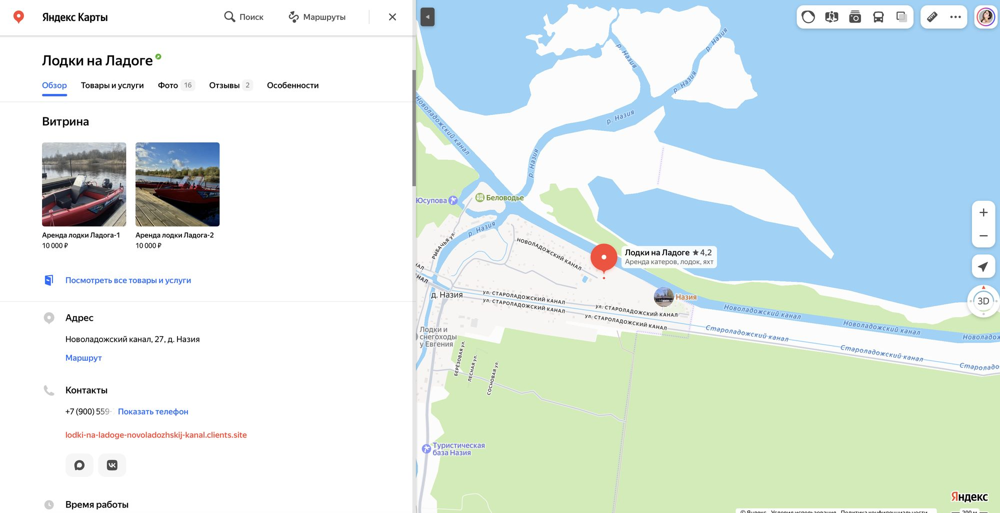
точка входа до сайта — карточка в Яндекс Картах
02 research до дизайна
Сначала путь, потом экран
До первого макета — wireframe: путь пользователя, иерархия блоков, уровни текста и отдельные правила для телефона.
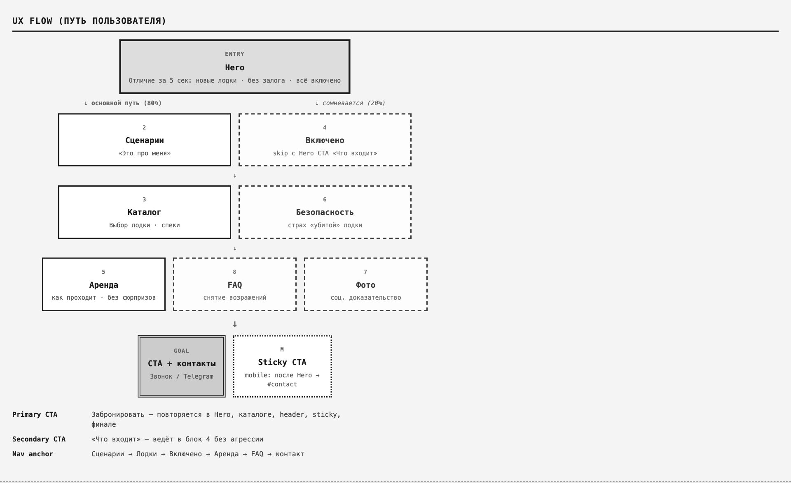
wireframe · UX flow — путь пользователя
«Цель flow: за 10–15 секунд показать отличие от обычного проката → сценарий → лодка → бронь».
из wireframe проекта
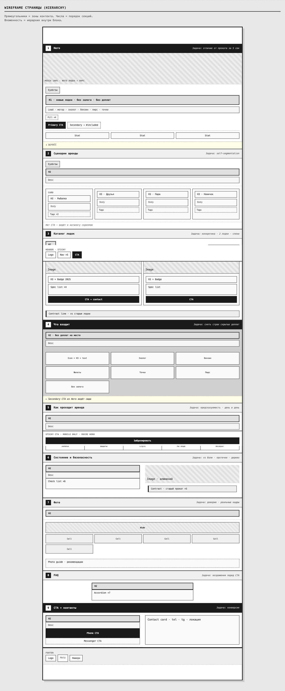
wireframe страницы · 9 блоков, у каждого — задача
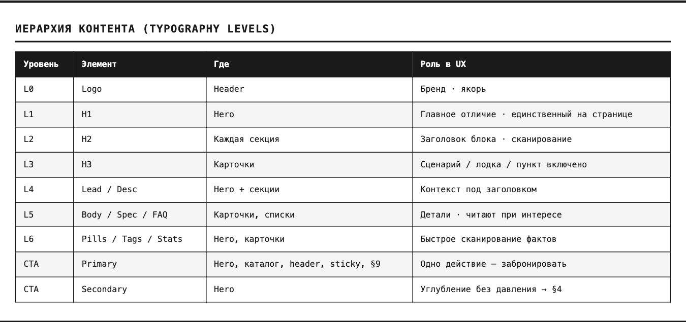
уровни текста и роль каждого в UX
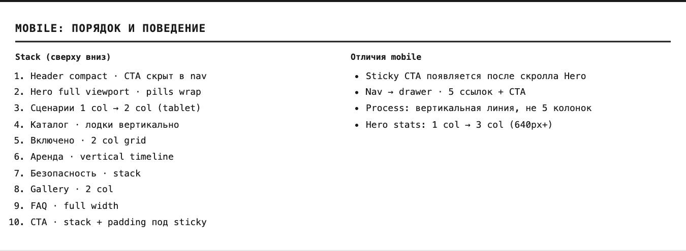
правила мобильной версии
решения
03 ux · выбор лодки
Выбрать лодку за 10 секунд
В парке две одинаковые лодки — сравнивать нечего, поэтому карточка отвечает сразу на всё: характеристики, цена за день и ближайший свободный выход. Кнопка брони — в той же строке.
04 ux · состав аренды
Всё уже на борту — без доплат
В wireframe задача блока записана как «снять страх скрытых доплат». Поэтому шесть пунктов, которые обычно выясняют по телефону, собраны в одну сетку.
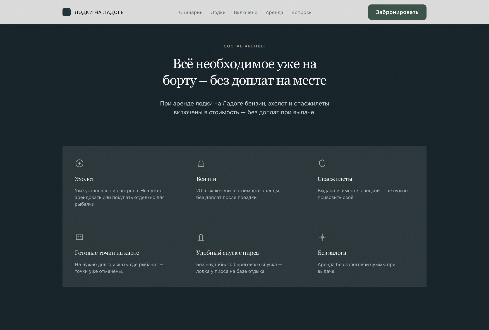
05 ux · сценарии
Один прокат — четыре повода
Рыбалка, компания до четырёх человек, прогулка вдвоём до крепости Орешек или первый раз за штурвалом. В каждой карточке — две короткие причины, почему это просто: «эхолот уже на борту», «права не нужны».
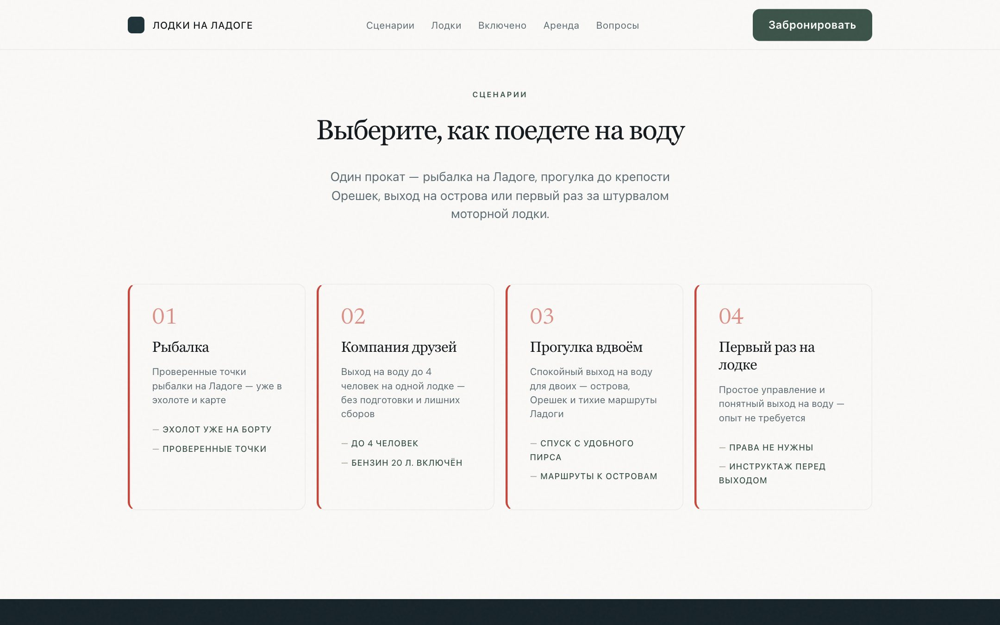
06 ux · вопросы
Семь ответов до звонка
Нужны ли права, есть ли залог, входят ли бензин и эхолот, можно ли взять лодку в день обращения, где её забирать и куда можно плыть. Короткие ответы в одну-две строки.
07 conversion · бронь
Бронь в три шага
Лодка и количество дней, дата и время старта, контакты. Итоговая сумма пересчитывается сразу, занятые даты и часы видны заранее. Под кнопкой — то, что снимает последнее сомнение: без предоплаты и без залога.
- 01Лодка
- 02Дата
- 03Контакты
08 ux · маршрут
10 минут от Мурманского шоссе
Последний вопрос перед поездкой — куда ехать. Деревня Назия, Кировский район, асфальтовый подъезд, карта с меткой базы и кнопка «Построить маршрут в Яндекс Картах».
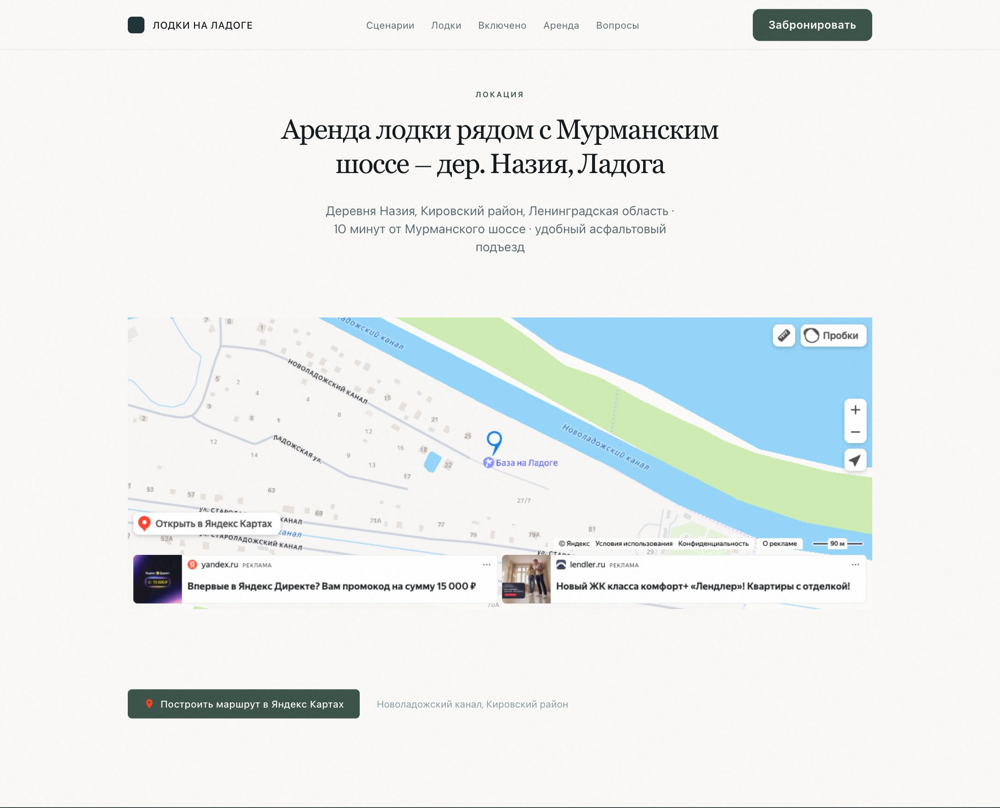
09 seo · локальный поиск
Каждый запрос ведёт в свой раздел
Структура строилась вокруг реальных сценариев выбора, а не только брендового запроса. Цена, эхолот, рыбалка, залог, бронь — у каждого запроса есть раздел, который на него отвечает.
запрос → раздел
в коде страницы
<title>Аренда лодки на Ладоге — прокат моторных лодок без залога | Назия, Кировский район</title>
"@type": "LocalBusiness",
"name": "Лодки на Ладоге",
"streetAddress": "Новоладожский канал, 27",
"addressLocality": "деревня Назия",
"geo": { 59.9053, 31.2044 },
"opens": "07:00", "closes": "21:00"
Заголовок и описание страницы построены вокруг тех же вопросов, разметка LocalBusiness отдаёт поиску адрес, координаты, телефон и часы работы.
10 responsive · мобильная версия
На телефоне — кнопка всегда рядом
Мобильная версия проектировалась отдельно ещё в wireframe, а не сжималась из десктопа:
- Закреплённая кнопка «Забронировать» появляется после первого экрана
- Навигация — в выдвижном меню
- Лодки и сценарии — в одну колонку, характеристики остаются читаемыми
- Бронирование — те же три шага, под палец
первый экран
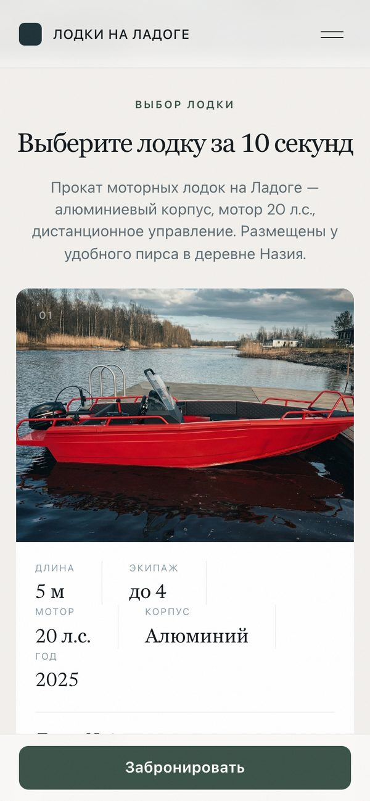
лодки
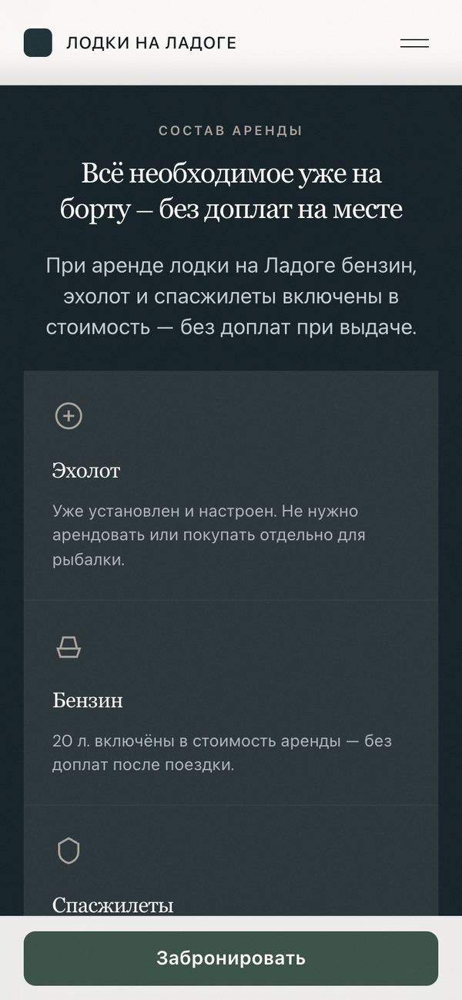
включено
бронь
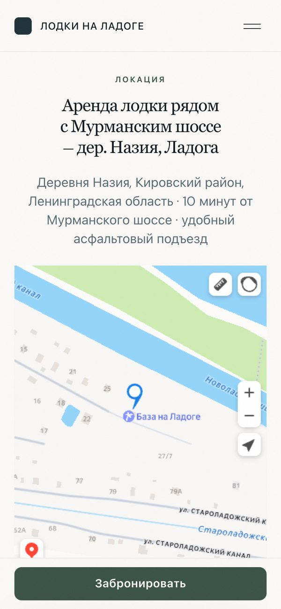
маршрут
11 visual · ai визуальный язык
Ладога на рассвете. Красная лодка.
Спокойная тёмная палитра воды и хвои, один яркий акцент — цвет самих лодок. Атмосферные кадры сделаны с помощью AI: они задают настроение, но ничего не доказывают.
 AI
AI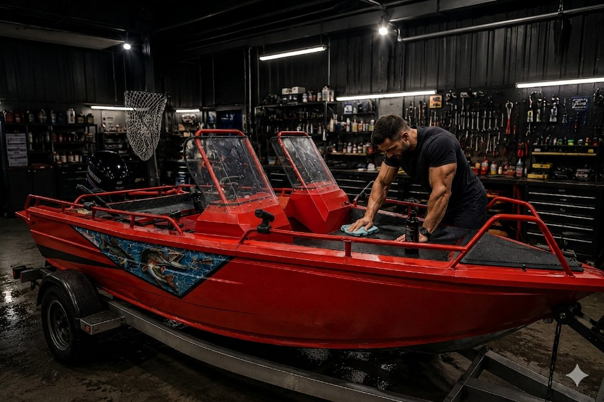
AI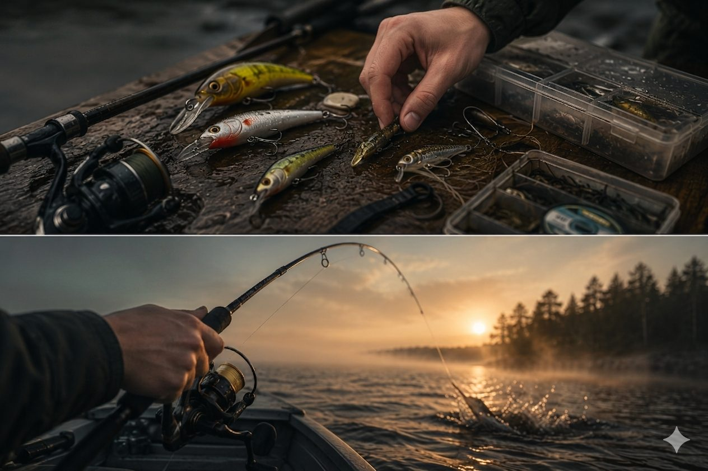
AI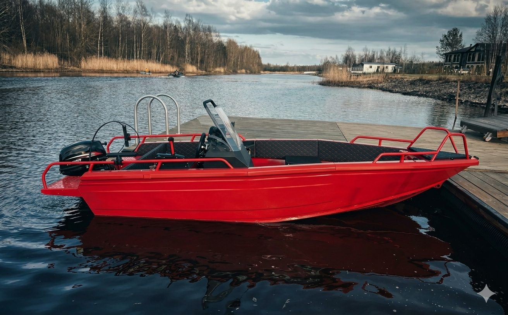
AI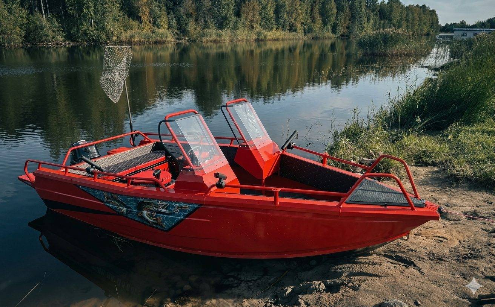
AIглубокая вода
озеро
хвоя · кнопки
лён
галька
лодка · акцент
13 результат
Сайт, который отвечает до звонка.
Вместо карточки в Картах — сайт, где за один проход видно цену, состав аренды, условия и дорогу, а бронь оформляется в три шага.